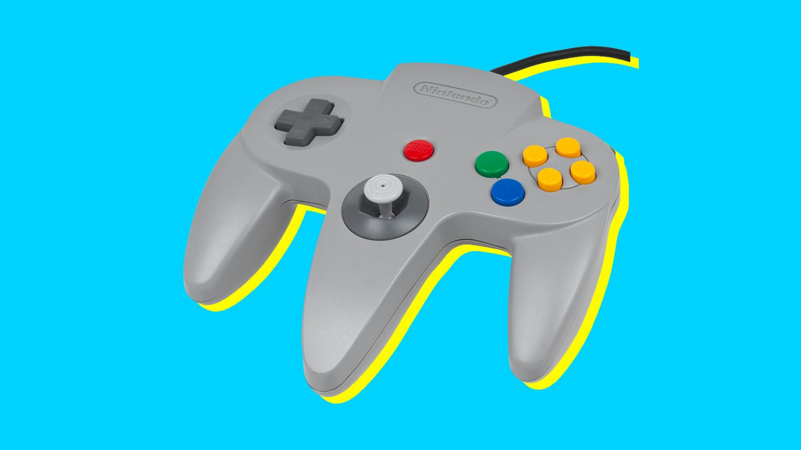

Nintendo64  This controller is really strange, why is their a middle grip? The reason why this has a middle grip is because there is a back trigger and a joystick. It was created in 1996 and is used for certain games.